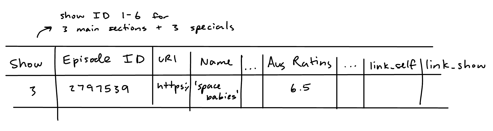
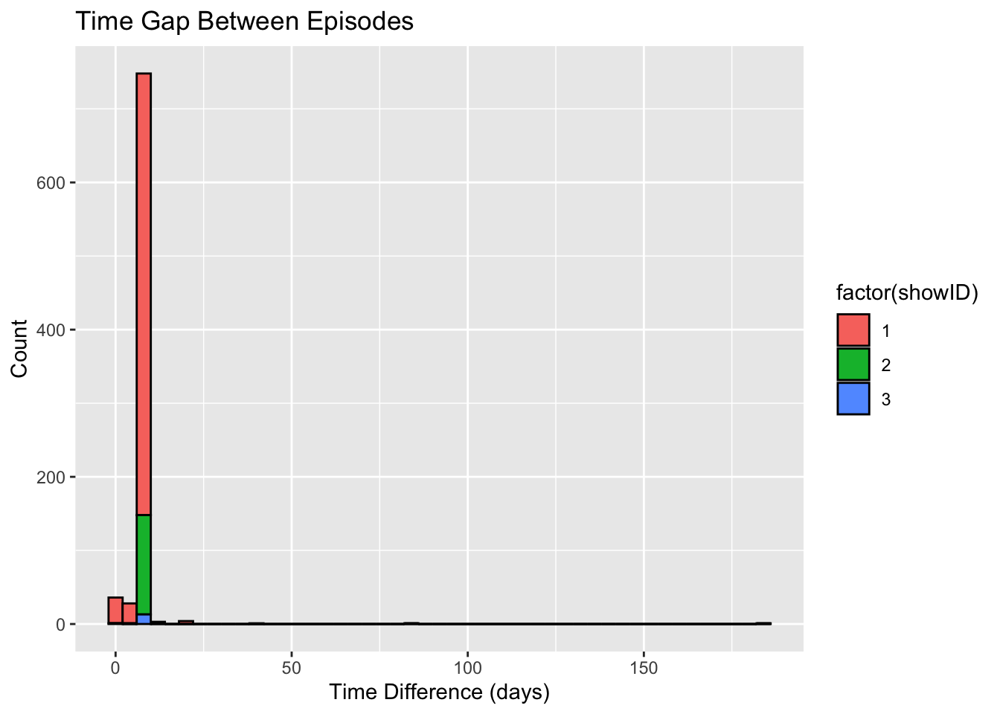
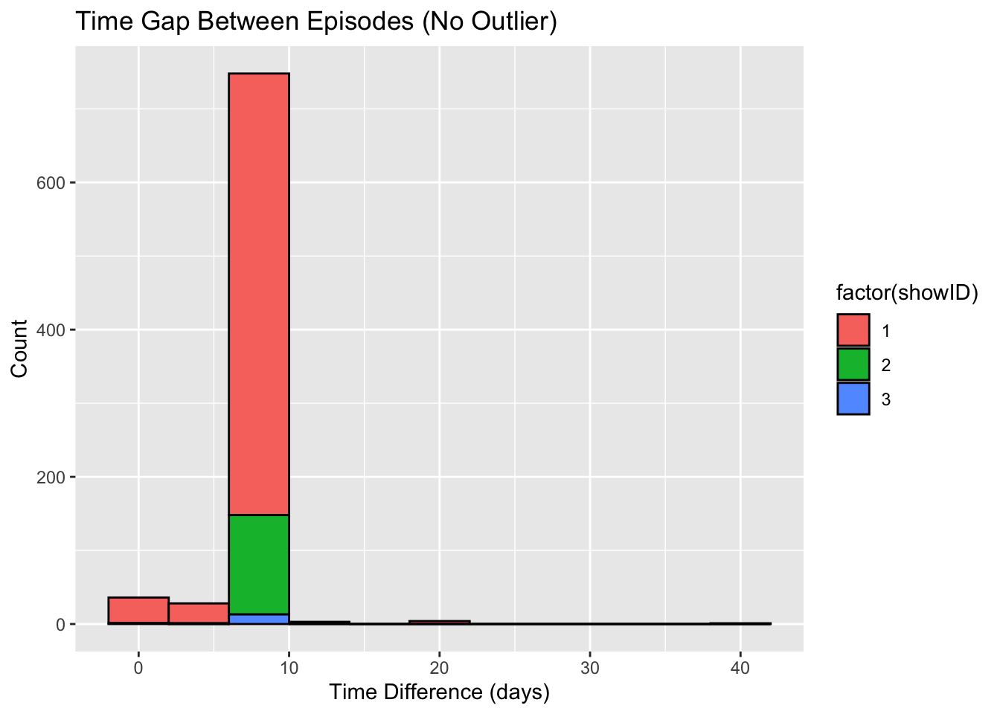
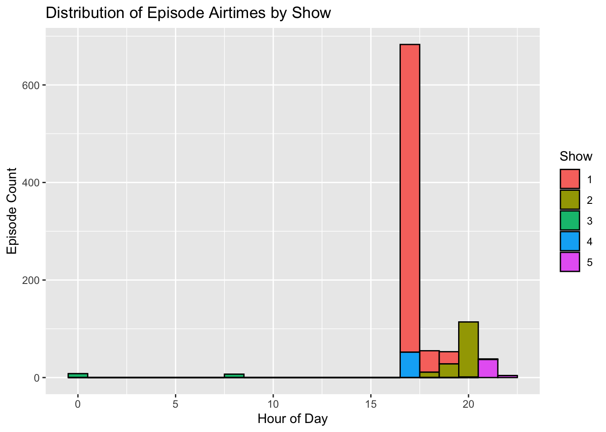

library(jsonlite)
library(dplyr)
library(lubridate)
library(tidyr)
library(stringr)
library(ggplot2)
library(tibble)
drwho1963 <- read_json("drwho-766.json")
drwho2005 <- read_json("drwho-210.json")
drwho2023 <- read_json("drwho-72724.json")Lab: List Processing
1 Data Source
JSON data files for this assignment were obtained from the TVMaze API for three different Doctor Who series as well as two different spin-offs.
- Dr. Who 2023-2025
- Dr. Who 2005-2022
- Dr. Who 1963-1996
- The Sarah Jane Adventures (2007-2020)
- Torchwood (2006-2011)
- Torchwood: Web of Lies (2011)
2 Warming Up
For this portion of the assignment, only work with the canonical Dr. Who files (drwho2023.json, drwho2005.json, drwho1963.json).
2.1 Parse the file
Add a code chunk that will read each of the JSON files in. Store the data in a drwhoYYYY object, where YYYY is the first year the series began to air. How are the data objects stored?
These data objects are stored as lists. The two longer portions of the shows are stored as “large lists” since there is a significant amount of elements.
2.2 Examining List Data Structures
Create a nested markdown list showing what variables are nested at each level of the JSON file. Include an ‘episode’ object that is a stand-in for a generic episode (e.g. don’t create a list with all 700+ episodes in it, just show what a single episode has). Make sure you use proper markdown formatting to ensure that the lists are rendered properly when you compile your document.
Hint: The prettify() function in the R package jsonlite will spit out a better-formatted version of a JSON file.
prettify(readLines("drwho-210.json"), indent=1)Show
Episode
Episode ID
URL
Name/title
Season number
Type (regular or special)
Air date
Air time
Air stamp
Run time
Rating
- Average rating
Image
Medium
Original
Summary
Links
Self
- Href
Show
Href
Name
Is there any information stored in the list structure that you feel is redundant? If so, why?
I think that it is redundant to have the average rating being stored in it’s own list. There is only one item in the list for the rating, so it seems unnecessary. The same can be said for the way that the links are nested in their own lists.
2.3 Develop A Strategy
Consider what information you would need to examine the structure of Dr. Who episodes over time (show run time, season length, specials) as well as the ratings, combining information across all three data files.
Sketch one or more rectangular data tables that look like your expected output. Remember that if you link to an image, you must link to something with a picture extension (.png, .jpg), and if you reference a file it should be using a local path and you must also add the picture to your git repository.

Show ID:
Dr. Who 1963
Dr. Who 2005
Dr. Who 2023
The Sarah Jane Adventures 2007
Torchwood 2006
Torchwood 2011
What operations will you need to perform to get the data into a form matching your sketch? Make an ordered list of steps you need to take.
- Read the json files as dataframes
- Add a column for showID to each dataframe
- Join the 3 shows into one single dataframe
2.4 Implement Your Strategy
Add a code chunk that will convert the JSON files into the table(s) you sketched above. Make sure that the resulting tables have the correct variable types (e.g., dates should not be stored as character variables).
Print out the first 5 rows of each table that you create (but no more)!
show1 <- fromJSON("drwho-766.json")
show2 <- fromJSON("drwho-210.json")
show3 <- fromJSON("drwho-72724.json")
show1 <- show1 %>%
mutate(showID = 1)
show2 <- show2 %>%
mutate(showID = 2)
show3 <- show3 %>%
mutate(showID = 3)
shows <- bind_rows(show1, show2, show3)
shows <- shows %>%
mutate(airdate = ymd(airdate),
airstamp = ymd_hms(airstamp))
head(shows, 5) id
1 67360
2 67361
3 67362
4 67363
5 67364
url
1 https://www.tvmaze.com/episodes/67360/doctor-who-1x01-an-unearthly-child-an-unearthly-child-part-one
2 https://www.tvmaze.com/episodes/67361/doctor-who-1x02-the-cave-of-skulls-an-unearthly-child-part-two
3 https://www.tvmaze.com/episodes/67362/doctor-who-1x03-the-forest-of-fear-an-unearthly-child-part-three
4 https://www.tvmaze.com/episodes/67363/doctor-who-1x04-the-firemaker-an-unearthly-child-part-four
5 https://www.tvmaze.com/episodes/67364/doctor-who-1x05-the-dead-planet-the-daleks-part-one
name season number type
1 An Unearthly Child (An Unearthly Child, Part One) 1 1 regular
2 The Cave of Skulls (An Unearthly Child, Part Two) 1 2 regular
3 The Forest of Fear (An Unearthly Child, Part Three) 1 3 regular
4 The Firemaker (An Unearthly Child, Part Four) 1 4 regular
5 The Dead Planet (The Daleks, Part One) 1 5 regular
airdate airtime airstamp runtime average
1 1963-11-23 17:15 1963-11-23 17:15:00 25 8.1
2 1963-11-30 17:15 1963-11-30 17:15:00 25 7.2
3 1963-12-07 17:15 1963-12-07 17:15:00 25 7.1
4 1963-12-14 17:15 1963-12-14 17:15:00 25 7.4
5 1963-12-21 17:15 1963-12-21 17:15:00 25 7.6
image.medium
1 https://static.tvmaze.com/uploads/images/medium_landscape/22/55779.jpg
2 https://static.tvmaze.com/uploads/images/medium_landscape/50/125284.jpg
3 https://static.tvmaze.com/uploads/images/medium_landscape/50/125433.jpg
4 https://static.tvmaze.com/uploads/images/medium_landscape/50/125760.jpg
5 https://static.tvmaze.com/uploads/images/medium_landscape/22/55782.jpg
image.original
1 https://static.tvmaze.com/uploads/images/original_untouched/22/55779.jpg
2 https://static.tvmaze.com/uploads/images/original_untouched/50/125284.jpg
3 https://static.tvmaze.com/uploads/images/original_untouched/50/125433.jpg
4 https://static.tvmaze.com/uploads/images/original_untouched/50/125760.jpg
5 https://static.tvmaze.com/uploads/images/original_untouched/22/55782.jpg
summary
1 <p>Barbara Wright and Ian Chesterton, two humble teachers during 1963, are surprised by a bright student named Susan Foreman. Feeling inquisitive of her upbringing, they seek out her residence to learn who nurtured such a genius. There, they discover a junkyard inhabited by her grandfather, simply known as "the Doctor", and he doesn't want them lurking about.</p><p>When the teachers refuse to leave, they discover that an ordinary police box is actually bigger on the inside. The Doctor decides they know too much about his and Susan's otherworldly origins and takes them on a journey across space and time in his TARDIS, the place he and Susan now call home.</p>
2 <p>Barbara Wright and Ian Chesterton, two humble teachers during 1963, are surprised by a bright student named Susan Foreman. Feeling inquisitive of her upbringing, they seek out her residence to learn who nurtured such a genius. There, they discover a junkyard inhabited by her grandfather, simply known as "the Doctor", and he doesn't want them lurking about.</p><p>When the teachers refuse to leave, they discover that an ordinary police box is actually bigger on the inside. The Doctor decides they know too much about his and Susan's otherworldly origins and takes them on a journey across space and time in his TARDIS, the place he and Susan now call home.</p>
3 <p>Barbara Wright and Ian Chesterton, two humble teachers during 1963, are surprised by a bright student named Susan Foreman. Feeling inquisitive of her upbringing, they seek out her residence to learn who nurtured such a genius. There, they discover a junkyard inhabited by her grandfather, simply known as "the Doctor", and he doesn't want them lurking about.</p><p>When the teachers refuse to leave, they discover that an ordinary police box is actually bigger on the inside. The Doctor decides they know too much about his and Susan's otherworldly origins and takes them on a journey across space and time in his TARDIS, the place he and Susan now call home.</p>
4 <p>Barbara Wright and Ian Chesterton, two humble teachers during 1963, are surprised by a bright student named Susan Foreman. Feeling inquisitive of her upbringing, they seek out her residence to learn who nurtured such a genius. There, they discover a junkyard inhabited by her grandfather, simply known as "the Doctor", and he doesn't want them lurking about.</p><p>When the teachers refuse to leave, they discover that an ordinary police box is actually bigger on the inside. The Doctor decides they know too much about his and Susan's otherworldly origins and takes them on a journey across space and time in his TARDIS, the place he and Susan now call home.</p>
5 <p>The TARDIS has brought the travellers to the planet Skaro where they meet two indigenous races — the Daleks, malicious mutant creatures encased in armoured travel machines, and the Thals, beautiful humanoids with pacifist principles. They convince the Thals of the need to fight for their own survival.</p><p>Joining forces with them and braving Skaro's many dangers, they launch a two-pronged attack on the Dalek city. The Daleks are all killed when, during the course of the fighting, their power supply is cut off.</p>
_links.href _links.show.href
1 https://api.tvmaze.com/episodes/67360 https://api.tvmaze.com/shows/766
2 https://api.tvmaze.com/episodes/67361 https://api.tvmaze.com/shows/766
3 https://api.tvmaze.com/episodes/67362 https://api.tvmaze.com/shows/766
4 https://api.tvmaze.com/episodes/67363 https://api.tvmaze.com/shows/766
5 https://api.tvmaze.com/episodes/67364 https://api.tvmaze.com/shows/766
_links.show.name showID
1 Doctor Who 1
2 Doctor Who 1
3 Doctor Who 1
4 Doctor Who 1
5 Doctor Who 12.5 Examining Episode Air Dates
Visually represent the length of time between air dates of adjacent episodes within the same season, across all seasons of Dr. Who. You may need to create a factor to indicate which Dr. Who series is indicated, as there will be a Season 1 for each of the series. Your plot must have appropriate labels and a title.
shows_clean <- shows %>%
select(id, name, season, number, airdate, airtime, airstamp, showID, type) %>%
mutate(number = sprintf("%02d", number), #make all the formats from 1 to 01 so ID are same digit length
season = sprintf("%02d", season),
ID_season_ep = paste(showID, season, number, sep="")) #should keep a chronological order for all episodes
shows_clean <- shows_clean %>%
arrange(showID) %>% #sort the data to ensure correct order
group_by(show_season = substr(ID_season_ep, 1, 3)) %>%
mutate( #lag makes the first episode produce an NA instead of finding the difference
time_diff = as.numeric(difftime(airstamp, lag(airstamp), units = "days")),
time_diff = round(as.numeric(time_diff), 3)) %>%
ungroup()
ggplot(shows_clean, aes(x = time_diff, fill = factor(showID))) +
geom_histogram(binwidth = 4, color = "black") +
labs(
title = "Time Gap Between Episodes",
x = "Time Difference (days)",
y = "Count")Warning: Removed 47 rows containing non-finite outside the scale range
(`stat_bin()`).
no_outlier <- shows_clean %>%
filter(!time_diff > 80)
ggplot(no_outlier, aes(x = time_diff, fill = factor(showID))) +
geom_histogram(binwidth = 4, color = "black") +
labs(
title = "Time Gap Between Episodes (No Outlier)",
x = "Time Difference (days)",
y = "Count")
In 2-3 sentences, explain what conclusions you might draw from the data. What patterns do you notice? Are there data quality issues?
This does not include the gap between epsiodes from different seasons. There are two outliers. One in 2012/2013 of Season 7 where there is an 182 day gap in the middle of a season, the second one in 2011 of Season 6 with a 84 day gap. The second graph is with that outliers removed to see the data better. It looks like a general pattern of 7 days between episodes, especially in the 1963 and 2005 shows where they were airing on TV. It also seems like a handful of epsiodes from seasons 19, 20, and 21 were released with only one day gap inbetween.
3 Timey-Wimey Series and Episodes
3.1 Setting Up
In this section of the assignment, you will work with all of the provided JSON files. Use a functional programming approach to read in all of the files and bind them together.
library(purrr)
Attaching package: 'purrr'The following object is masked from 'package:jsonlite':
flattenfiles <- c("drwho-210.json", "drwho-766.json", "drwho-72724.json", "sarahjane-970.json", "torchwood-659.json", "torchwood-26694.json")
all_data <- files %>%
map(fromJSON) %>%
bind_rows()Then, use the processing code you wrote for the previous section to perform appropriate data cleaning steps. At the end of the chunk, your data should be in a reasonably tidy, rectangular form with appropriate data types. Call this rectangular table whoverse.
all_data_clean <- all_data %>%
mutate(
avg_rating = rating$average,
medium_image = image$medium,
original_image = image$original,
self_link = `_links`$self$href,
show_link = `_links`$show$href,
show_name = `_links`$show$name) %>%
select(-rating, -image, -`_links`) %>%
mutate(
summary = summary %>%
str_replace_all("<p>", " ") %>%
str_replace_all("</p>", "")) %>%
mutate(airdate = ymd(airdate),
airstamp = ymd_hms(airstamp))
whoverse <- all_data_clean %>%
mutate(
showID = case_when(
show_name == "Doctor Who" & year(airdate) < 2000 ~ 1,
show_name == "Doctor Who" & year(airdate) >= 2005 & year(airdate) < 2022 ~ 2,
show_name == "Doctor Who" & year(airdate) >= 2023 ~ 3,
show_name == "The Sarah Jane Adventures" ~ 4,
show_name == "Torchwood" ~ 5,
show_name == "Torchwood: Web of Lies" ~ 6)) %>%
mutate(showID = replace_na(showID, 1))3.2 Air Time
Investigate the air time of the episodes relative to the air date, series, and season. It may help to know that the watershed period in the UK is 9:00pm - 5:30am. Content that is unsuitable for minors may only be shown during this window. What conclusions do you draw about the target audience for each show?
How can you explain any shows in the Dr. Who universe which do not have airtimes provided?
whoverse <- whoverse %>%
mutate(
air_time_num = hour(hms(paste0(airtime, ":00"))) + minute(hms(paste0(airtime, ":00"))) / 60)Warning: There were 2 warnings in `mutate()`.
The first warning was:
ℹ In argument: `air_time_num = +...`.
Caused by warning in `.parse_hms()`:
! Some strings failed to parse
ℹ Run `dplyr::last_dplyr_warnings()` to see the 1 remaining warning.ggplot(whoverse, aes(x = air_time_num, fill = factor(showID))) +
geom_histogram(binwidth = 1, color = "black") +
labs(
title = "Distribution of Episode Airtimes by Show",
x = "Hour of Day",
y = "Episode Count",
fill = "Show")Warning: Removed 10 rows containing non-finite outside the scale range
(`stat_bin()`).
The first graph shows us that the majority of the airtimes were in the evening. The original 1963 Dr Who and The Sarah JAne Adventures were normally shown at 5:15 pm, with some exceptions aired at 6:25. My best guess was this was due to important events being aired on those days so the time slot was delayed. The 2005 show was mostly aired at 7:35 pm with some variation. The 2023 version of Dr Who was released on a streaming service and not aired on scheduled programming, so the airtimes are set to midnight or 8:00 am. TorchWood was aired at 9:00 pm, which would be the earliest time slot to air a “mature” show. The TorchWood: Web of Lies series is an animated web-series that was not aired on traditional TV, so the “airtimes” were not recorded. The selection of these time tells us that the main Dr Who shows were aimed at a general audience, which shifted with how the majority of audiences watch media. The 1963 show aired earlier than the 2005 show which may indicate the producers trying to target a younger audience (young adult/teens) that might stay up later. The newer shows are not aired on traditional TV at all, which definitely reflected how audiences use more streaming services now. The main Torchwood show was late in the evening due to the content restrictions, since the target audience did not include children.
3.3 Another Layer of JSON
Use the show URL (_links > show > href) to read in the JSON file for each show. As with scraping, it is important to be polite and not make unnecessary server calls, so pre-process the data to ensure that you only make one server call for each show. You should use a functional programming approach when reading in these files.
show_urls <- files %>%
map_dfr(~ tibble(
file = .x,
show_url = fromJSON(.x, flatten = TRUE)$`_links.show.href`))Process the JSON files using a functional approach and construct an appropriate table for the combined data you’ve acquired during this step (no need to join the data with the full whoverse episode-level data).
What keys would you use to join this data with the whoverse episode level data? Explain.
Explanation
3.4 Explore!
Use the data you’ve assembled to answer a question you find interesting about this data. Any graphics you make should have appropriate titles and axis labels. Tables should be reasonably concise (e.g. don’t show all 900 episodes in a table), generated in a reproducible fashion, and formatted with markdown. Any results (graphics, tables, models) should be explained with at least 2-3 sentences.
If you’re stuck, consider examining the frequency of words in the episode descriptions across different series or seasons. Or, look at the episode guest cast by appending /guestcast/ to the episode URL and see whether there are common guests across different seasons.
Question goes here
Code goes here – once you output a result, you should explain it using markdown text, and then start a new code chunk to continue your exploration.